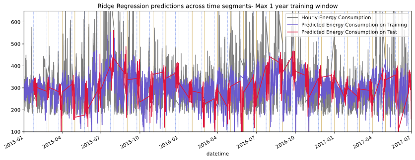
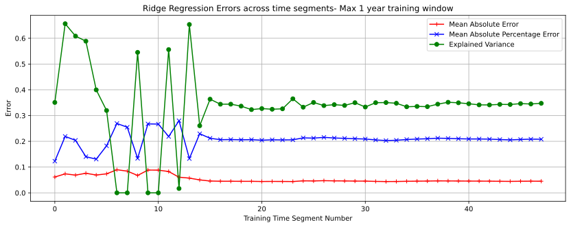

Forecasting & Prediction
Forecasting
Accurate Forecasting improves the predictabilty in the business environment. Ability to predict the future based on past trend helps in planning, business budgeting and goal setting. The ability to accurately predict future demand and business size depends on the following:
- Historical data of time varying signature of a SMART metric that has relevant and representative of trends, seasonlity and cycles
- Categorical- nominal and orfinal encodings of key drivers and barriers of demand, not just temporal seasonal changes
- Clear understanding of attributable business initiaitves that lead to improved demand
- Robust pipeline for ingestion, quality assurance and orchestration- every time step of prediction is a new prediction problem and needs automation
- Model decisions that don't violate causality and is validated in a consistent manner along the direction of time
Then offcourse there are unforeseen drivers such as COVID-19 pandemic and the war in Ukraine. Predicting the future in such situations require playing out "what if?" scenarios on historical data to curate specific facets of history to see how the long term trend gets affected. And this is really where business heuristics plays a role more so than any machine learnign techniques
Some of the reasons (but not limited to) why forecasting projects fail are as follows:
- Poor choice of target metrics. A Forecasting target metrics ought to be atomic and granular and seldom compound corporate KPIs make great candidates
- Upstream data quality in all likelyhood shall play havoc in stability and reliability of prediction into the future. A instable pipeline is a great learning opportunity but isn't all that successful in business support
- Univariate timeseries models are often used as a quick way to get around challenges of acquiring multivariate data and leads to sub par performance
Illustrative Example
The example below is from a energy consumption forecasting use case. The energy consumption is for circa 4 years at an hourly level
The problem is predict the energy consumption for the test set that is intersparsed across all 4 years for different lengths of time at an hourly level. These are the biege colored vertical lines in the above figure.
Prediction Topology
The above diagram is a compact way to visualize the prediction problem at hand. The bars are stacked count of data points in time that is consistent with causality- the orange are the group of points in test and the blue is the count of datetime data points in Training that precedes them. In effect for building prediction for each orange set the preceding blue set need be used.
Overall, this problem is akin to building weekly/daily forecasts based on previous business performance and demand. As more history gets accumulated the ability to produce more accurate predictions improves into the future. For example in the 0th time segmnt the train/ set set sizes are almost similar whereas in the 47th time segment you nearly have 4 years worth history to predict circa 22 days- emcompassing long and short term signals
Exploratory Analysis

- The histogram shows the consumption metric renderd by a categorical variable var2 with values A,B and C. It's data dictionary didn't sate what this is and it looks like values B,C are sparse meaning without some kind of sampling approach it is unlikely we shall see much stand alone impact in the prediction algorithm
- This bar graph shows the distribution of consumption across each day of the week, rendered by non working days. 5, 6 being Saturday and Sunday. It appears holidays in weekdays leads to higher consumption. A mental note to create a feature for holidays.
- The heatmap shows weekends late in the night shows increased consumption and week days after midday shows lower load. This appears counter intuitive but each use case has it's own nicetities that we need to build on. 4 years of history provides us history to geenralize on

- This scatter plot rendered by season shows that the variable var1 has little or no relationship/ causality with consumption
- This scatter plot looks samiliar to the first one. Giving reasons to think var1 and temperature are collinear.
- The windspeed has a inverse relationship with consumption. This is a non linear relationship and gives us opprotunities to model differently

- pressure and consumption shows little relationship wth each other
- Temperature shows linear decreasing relationship wth each other. Ditto for var1

The monthly, quarterly means don't show any significant trend however towards the end the consumption pattern shows more variations around the long term mean. The standard deviation although range bound shows variation as a result some heteroscadasticity
Model Development
Instead of pruning the variables at the get go, time segment wise regularized Ridge Regression models were developed in as a training harness as sci-kit learn make_pipeline() . As new time segments may get added the deployed model shall develop a new model and score the most recent time segment based on history.
Feature Engineering
A total of ~85 features have been used in this exercise. The important classes are as follows:
- Base multivariate features:
'temperature', 'var1', 'pressure', 'windspeed' - Time related features such as:
'Year', 'Month', 'Week', 'WeekDay', 'Hour' - Trigonometric features such as to capcture cyclicity:
'hour_sin', 'hour_cos', 'WeekDay_sin', 'WeekDay_cos', 'Month_sin'as in the upper graph below - Spline features: Example
'hr_spline_0', 'hr_spline_1', 'hr_spline_2', 'hr_spline_3'etc as shown in the lower graph below - New binary features such as
'Holiday', 'Weekend' - One hot encoded variables
'var2_B', 'var2_C' - 50 oddd interaction variables between Hourly spline variables and categorical and binary variables to capture spikes and throughs as the case may be due to interactions
Training and Prediction
There were two sets of model developed one looking at long term data and the other looking at short term performance. Both models use RidgeCV to optimize the Mean Absolute Error in a K= 5 cross validating frame work for each of the 48 time segments.
Long Term Window
The long term window model looks back a maximum of one year of hourly data and has the following general formulation:
alphas = np.logspace(-10, 6, 25) ts_cv = TimeSeriesSplit( n_splits=5, gap=48, max_train_size= max(8760/4,int(.9*len(X_train))), test_size= int(.1*len(X_train)) ) ridgecv = RidgeCV(alphas = alphas, scoring = 'neg_mean_absolute_error', normalize = True, cv= ts_cv).fit(X_train, y_train)

The above diagram is a heatmap of the coefficents of the features in the ridge regression. Until a year worth of training data is available the values flip flop and appears unstable after that the values appear consistent. The Top 10 features with highest significance are-
['var1', 'windspeed', 'Mnth_spline_2', 'Mnth_spline_5', 'Month_cos', 'temperature', 'Mnth_spline, 'var2_B hr_spline_10', 'Month_sin', 'var2_B hr_spline_2']

The MAE value improves after the 13th time segment presumably because of the longer term history helps in stabilizing thre score. The MAE isn't bad after the 12th time segment and stabilizes about ~.045. This isn't bad but works well when the long term signal is isolated from the data using thus model
The above is the long term prediction of the test regimes across 47 models developed for each time segment in test. The predictions are all based on the best parameter optimization using MAE as a metric
Short Term Window
The short term model is based on maximum look back of 3 weeks. This model will probably be less resilliant to short term noises unlike the Long term model. The cross validation time split is as follows:
ts_cv = TimeSeriesSplit(
n_splits=5,
gap=48,
max_train_size= 1*int(.9*552),
test_size= int(.1*552)
)

The feature weights appear very unstable and keeps changing their weights and as a result importance

Overall the Explained Variance is better in some cases. but the MAE is lower than the long term model.

The short term model vissually appears to have mapped to the ups and downs better in some places than the long term model even though the overall error is higher.
opportunistic emsemble
So what is the final solution? Run the models at each tiem segment and compare the MAE and choose the model that shows better MAE as this is the metric that has been used for optimization The error profile is given in the diagram below. Indeed there can be more investgation done to improve the error rate on this.
